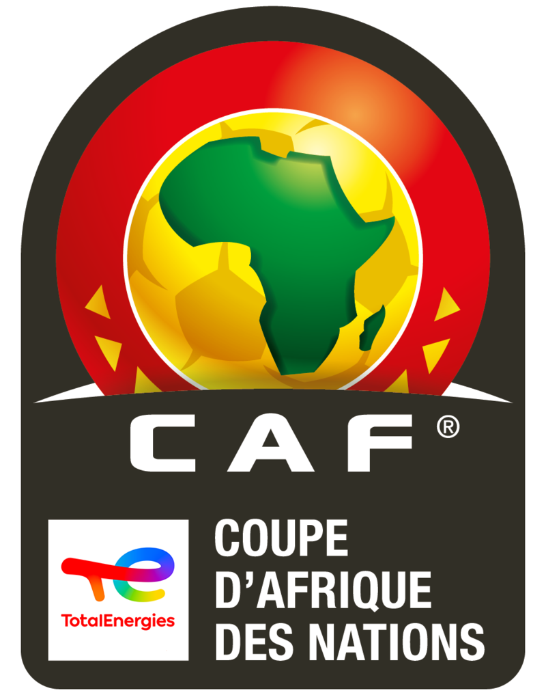
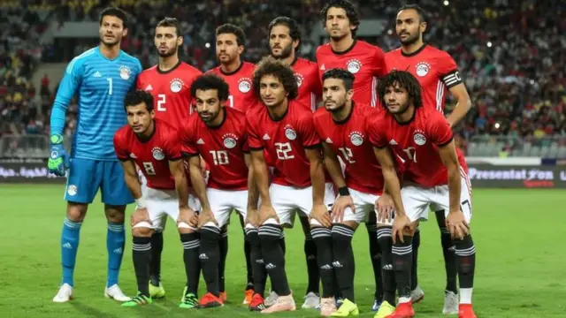

Bienvenue sur le site de la Coupe d'Afrique des Nations (CAN)
La Coupe d'Afrique des nations (CAN) est une compétition de football qui oppose les meilleures sélections nationales masculines d'Afrique, organisée par la Confédération africaine de football (CAF) depuis 1957. Depuis 1968, elle a lieu tous les deux ans, passant aux années impaires en 2013.
Lors de la première édition en 1957, il n'y avait que trois nations participantes : l'Égypte, le Soudan et l'Éthiopie. L'Afrique du Sud devait initialement adhérer, mais a été disqualifiée en raison de la politique d'apartheid du gouvernement. Depuis, le tournoi s'est beaucoup développé, rendant nécessaire la tenue d'un tournoi qualificatif.
Le nombre de participants au tournoi final a atteint 16 à l'édition 1998 (16 équipes devaient s'affronter en 1996, mais le Nigeria s'est retiré, réduisant le plateau à 15, et il en a été de même avec le retrait du Togo en 2010), et jusqu'en 2017, le format est inchangé, les 16 équipes étant réparties en 4 groupes de 4 équipes chacune, les 2 meilleures équipes de chaque groupe se qualifiant pour une phase à élimination directe. Le 20 juillet 2017, la Coupe d'Afrique des nations a été déplacée de janvier à juin et est passée de 16 à 24 équipes.

L'Égypte est la nation la plus titrée de l'histoire de la Coupe d’Afrique (7 titres)[4]. Pour la première fois dans l'histoire de la CAN, un pays, à savoir l'Égypte, a remporté 3 titres consécutifs, à savoir en 2006, en 2008 et en 2010. Puis le format du tournoi de la CAN est modifié en 2013, pour se tenir les années impaires afin de ne pas interférer avec la Coupe du monde de football[5]. Depuis 2024, la Côte d’Ivoire est le champion en titre.